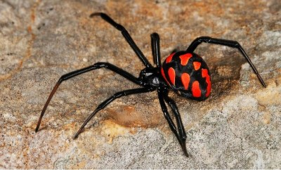
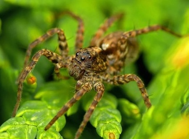
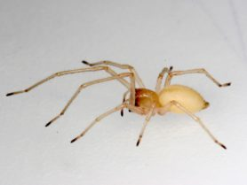

1. "Чорна вдова" або Каракурт
Особливо небезпечна його отрута для людей похилого віку та дітей.
Живе він на місцевостях з відносно
теплим кліматом, хоча влітку цілком може
мігрувати на північ.
Найнебезпечнішими для людини вважаються самки.
По-перше, вони набагато більші за самців: можуть
досягати розміру до 2 см. По-друге, вони
більш агресивні, тому частіше нападають на людей.
Каракурт має яскраве забарвлення,
яка покликана вказувати на його
отруйність. Хижаки, побачивши яскраві червоні
плями на черевці, воліють обходити
стороною членистоногої. Знизу на черевці
тварини можна розглянути помаранчеву
пляма, схожа на пісочний годинник.

2. Паук-волк
Живе він у пустелях, напівпустелях та степах.
Самки досягають 4 см завдовжки, вони значно
більша за самців. Забарвлення варіюється від коричневого до рудуватого.
Цей вид не плете павутину.
Він риє глибокі нори.
На жертву мізгір нападе із засідки
- Вистрибує з норки і впивається іклами.
Не зареєстровано жодного летального випадку,
викликаного укусом мізгіря.
Однак отрута членистоногого має
досить високу токсичність.
Місце, яке було укушено, сильно
опухає та червоніє. Людина відчуває
сильний біль. Можливі і серйозніші
наслідки внаслідок виникнення
алергічної реакції на отруту.

3. Хеіракантіум фаланга
Входить до списку найнебезпечніших павуків.
Вважається найотруйнішим. Його укус може бути смертельно-небезпечним,
тільки якщо у людини з'явиться алергічна
реакція на отруту цього виду. Потерпілого чекають
сильний біль, висока температура, нудота,
почервоніння та набряк ураженого місця.
Розмір членистоногого сягає 50-100 мм.
Має світле бежеве або жовте забарвлення.
Любить ховатися у гілках дерев та під листям.
Атакувати людину може з метою самозахисту.
Більш активний уночі, коли виходить на
полювання. Хеіракантума приваблює запах
бензину, тому його можна зустріти
у нафтопереробних підприємств.

4. Сумковий павук або мішечник
До списку небезпечних павуків часто вносять мішечника.
Любить теплий сухий клімат, влітку здатний мігрувати на
північ. Довжиною у розмаху лап досягає 2 см. Має світлий
забарвлення. На черевці дві довгі світло-жовті смуги.
Мішечник не дуже токсичний,
але дуже агресивний. Особливо небезпечні
самки, що захищають свій кокон.
Членистоноге дуже швидко бігає і
досить високо стрибає.
У разі укусу у людини підвищується
температура тіла, з'являється нудота і
відчуття сильного болю не тільки в районі
укусу, але й великих ділянках тіла.
Іноді укус може призвести до появи некрозу тканин.